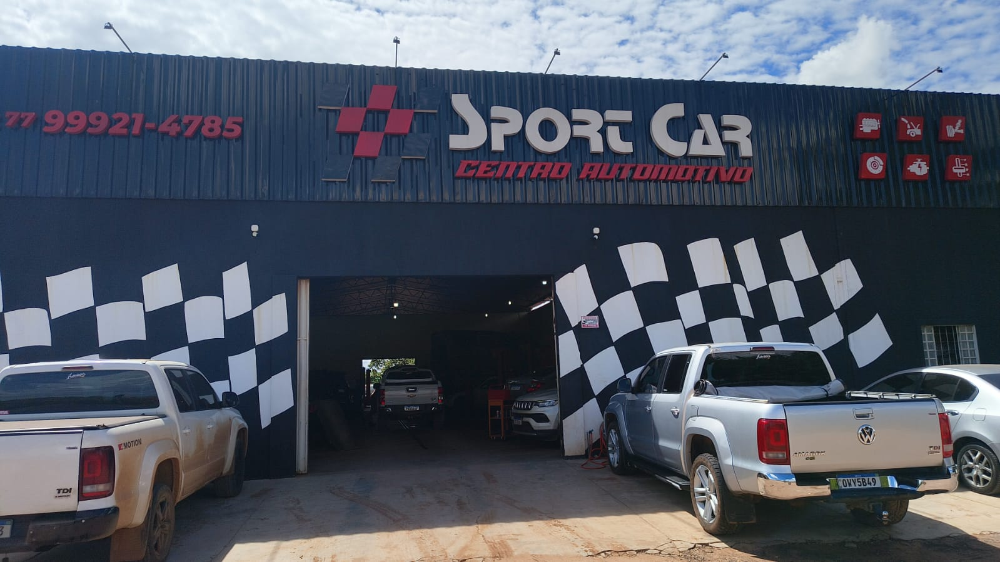
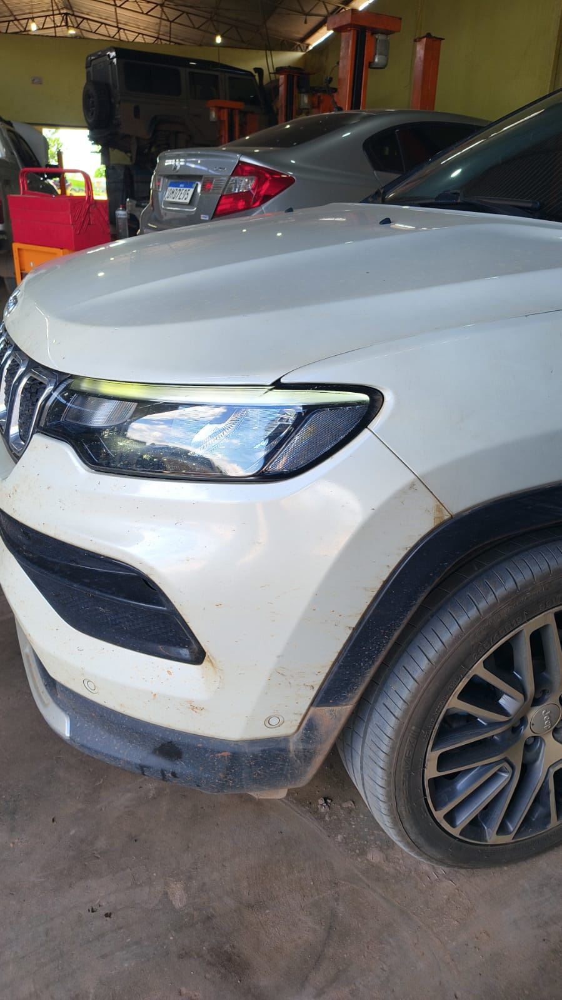
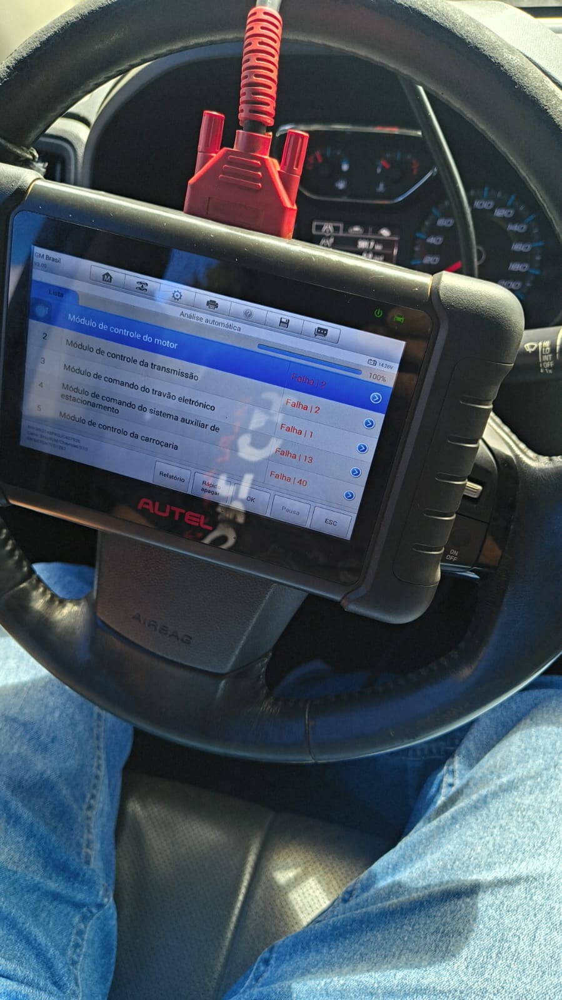
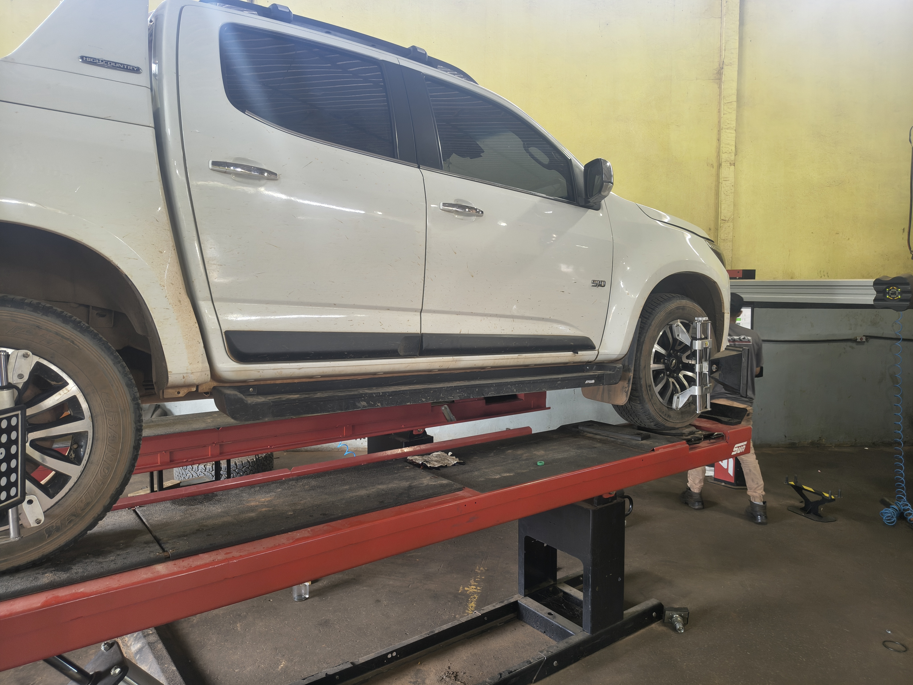
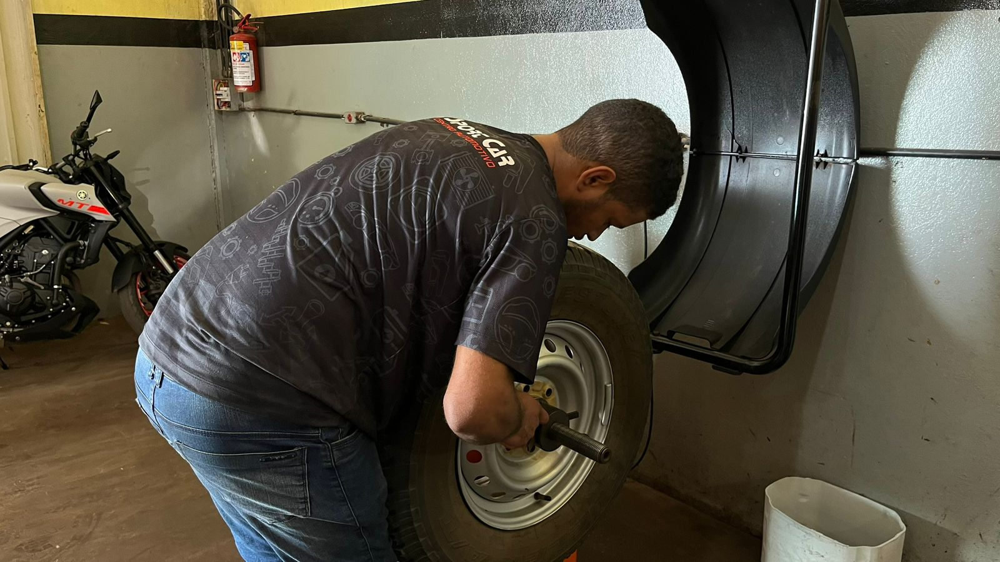
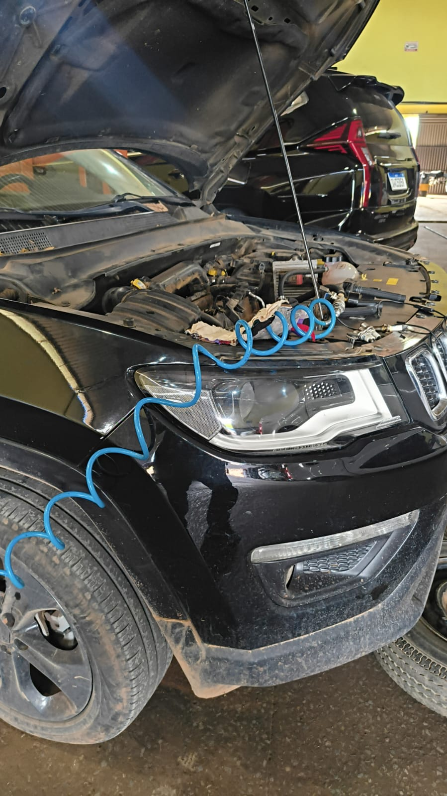
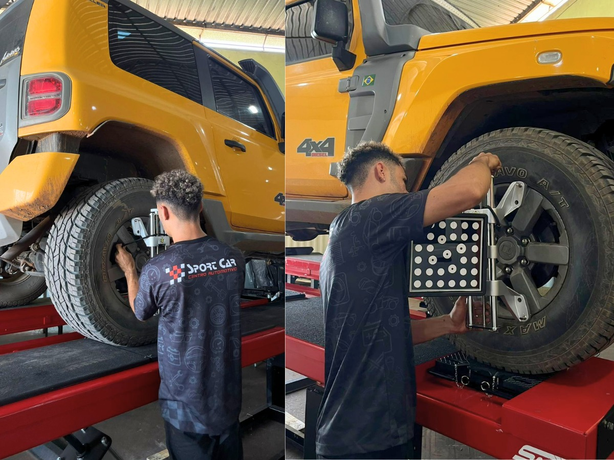
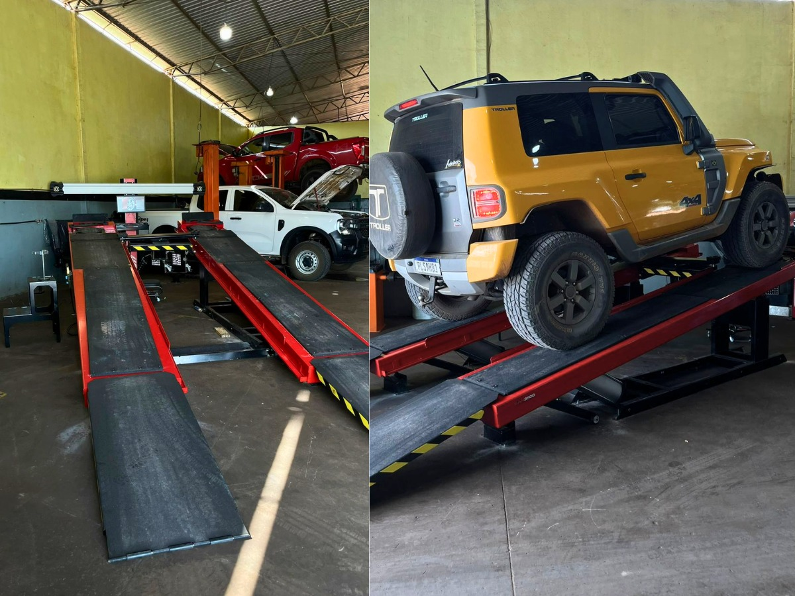

Presença consolidada em LEM com rotina focada em manutenção resolutiva.
Centro automotivo em Luís Eduardo Magalhães
2002
Rodrigo Cardoso
Transparência real
Diagnóstico assertivo, mecânica resolutiva e cuidado de verdade com o seu veículo.
A Sport Car atende desde 2002 com mecânica completa, alinhamento e balanceamento, câmbio automático, freios, suspensão, injeção eletrônica, retífica, pneus, restauração de antigos e suporte para nacionais, importados, 4x4, picapes, veículos elétricos, híbridos e PHEV.
Atendimento direto de quem também vive a oficina e acompanha o diagnóstico de perto.
Análise explicativa e vídeos como evidência para evitar gasto desnecessário.


Diagnóstico eletrônico avançado
Leitura precisa para diesel e flex com orientação clara sobre cada falha encontrada.

Alinhamento para 4x4 e picapes
Atendimento preparado para veículos de uso pesado e carroceria maior.
Mecânica completa
Peças para nacionais e importados
Alinhamento e balanceamento
Câmbio automático
Freios e suspensão
Injeção diesel e flex
Diagnóstico avançado
Restauração de antigos
Montagem de pneus
Veículos 4x4
Picapes de grande porte
Retífica de motores
Veículos elétricos e híbridos
Veículos PHEV
Serviço pensado para encontrar a causa certa e evitar troca sem necessidade.
Do carro de rotina ao utilitário de uso intenso, com método adequado para cada caso.
Base local forte para clientes da cidade e regiões vizinhas que buscam suporte confiável.
Linha de serviço Sport Car
Uma oficina que conversa com diferentes tipos de veículo sem perder precisão no diagnóstico.
Navegue pelas frentes de atendimento para ver como a Sport Car organiza o serviço de acordo com a necessidade do carro, da picape, do 4x4, dos veículos elétricos, híbridos e PHEV ou da manutenção mais técnica.
Leitura avançada
Diagnóstico eletrônico com leitura mais assertiva para diesel, flex, híbridos, elétricos e PHEV.
Equipamentos modernos e experiência prática ajudam a interpretar falhas com mais segurança, o que reduz tentativa e erro e permite orientar o cliente com mais clareza sobre a manutenção indicada.
- Análise explicativa para o cliente entender o problema e a proposta de serviço.
- Suporte para sistemas eletrônicos de veículos nacionais, importados, diesel, flex, híbridos, elétricos e PHEV.
- Mais segurança antes de seguir para troca de peças ou desmontagem.
O jeito Sport Car de atender
Explicação com evidência
Método certo para cada veículo
Atendimento acolhedor
Paixão por automobilismo, técnica de oficina e conversa franca na mesma experiência.
A Sport Car nasceu da paixão da família por carro e consolidou em Luís Eduardo Magalhães uma rotina de atendimento feita para quem quer resolver o veículo com mais confiança. O contato direto com Rodrigo Cardoso traz um ambiente amistoso, acolhimento e explicação objetiva sobre o que está acontecendo.
A oficina trabalha com equipamentos avançados, profissionais treinados e método específico para cada perfil de cliente, seja na mecânica do dia a dia, em sistemas mais sensíveis, em 4x4, em picapes, em veículos eletrificados ou em restauração de antigos.
Vídeos e demonstrações ajudam a mostrar o defeito e justificar o serviço necessário.
Experiência regional para aplicar a melhor manutenção conforme uso, porte e realidade do cliente.
Conversa direta, ambiente amistoso e acompanhamento de perto do início ao fechamento.

Oficina em movimento
Imagens reais do atendimento, da estrutura e dos serviços que fazem parte da rotina da Sport Car.




Base forte em Luís Eduardo Magalhães para quem procura oficina em LEM e suporte técnico na rota MATOPIBA.
A oficina atende clientes de todos os bairros de LEM e também recebe demanda de Barreiras, Taguatinga, Dianópolis, São Desidério, Novo Paraná, Roda Velha, Aurora, Campos Belos, Posse, Ponte Alta do Bom Jesus, Corrente e Bom Jesus.
07:30 às 12:00 e 13:30 às 18:00
Atualizações da oficina, serviços e bastidores do atendimento.
Oficina posicionada para quem procura atendimento sério e especializado na região.
Perguntas que ajudam a agilizar o atendimento
Informações simples para chegar na oficina com a demanda mais bem encaminhada.
Não. A oficina atende nacionais, importados, 4x4, picapes de grande porte, veículos elétricos, híbridos, PHEV e também restauração de antigos.
Mecânica completa, alinhamento, balanceamento, câmbio automático, freios, suspensão, injeção eletrônica, retífica, pneus e diagnóstico para veículos eletrificados.
Sim. A Sport Car trabalha com transparência, explicação objetiva e uso de vídeos como evidência quando isso ajuda a mostrar o problema.
Envie o modelo do veículo, o sintoma percebido, a cidade e o serviço desejado para que a oficina consiga direcionar melhor o atendimento.
Contato direto com a oficina
WhatsApp
(77) 99921-4785
E-mail
rodrigosportcar@gmail.com
Endereço
Rua José Ramos de Anchieta - Luís Eduardo Magalhães/BA
Instagram
@sportcarlem
Fale com a Sport Car e alinhe o atendimento do seu veículo com mais clareza desde a primeira conversa.
Se você está buscando oficina mecânica em LEM, alinhamento, mecânica completa, injeção eletrônica, câmbio automático, freios, suspensão ou suporte para 4x4, picapes, veículos elétricos, híbridos e PHEV, envie sua demanda e receba retorno mais rápido pelo WhatsApp.